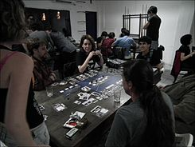

Battlestar Galactica : El juego de tablero
| Battlestar Galactica : El juego de tablero | ||
|---|---|---|
|  | ||
| Género | Juego temático | |
| Subgénero | Juego cooperativo, Juego de estilo americano | |
| Diseñado por | Corey Konieczka | |
| Ilustrador | Kevin Childress, Andrew Navaro, Brian Schomburg y WiL Springer. | |
| Editorial | Fantasy Flight Games | |
| Jugadores | 3 - 6 | |
| Edades | 10 + | |
| Preparación | Juego básico: 10 minutos (+ 5 con expansiones) | |
| Duración | 120 - 240 minutos | |
| Complejidad | Media | |
| Azar | Moderado | |
| [editar datos en Wikidata] | ||
{kind=link}
Battlestar Galactica : El juego de tablero (en el original en inglés Battlestar Galactica: The Board Game) es un juego de mesa diseñado por Corey Konieczka y editado en 2008 por Fantasy Flight Games.
Diseño del juego
El juego se basa en la serie de televisión de 2003 Battlestar Galactica (Reimaginada). Es un juego semicooperativo de estrategia para entre tres y seis jugadores, alguno de los cuales puede ser un agente enemigo de la raza Cylon, dándose circunstancia de que este jugador puede no ser consciente de ello en el comienzo del juego.
Cada uno de los diez personajes jugables tienen sus propias habilidades y puntos débiles, y todos ellos deben trabajar juntos para que la humanidad sobreviva, a la vez que intentan descubrir la identidad del posible traidor mientras la escasez de combustible, la contaminación de los alimentos, los ataques enemigos y los disturbios políticos amenazan con destruir la flota.[1]
Expansiones
En junio de 2009 se lanzó la «Expansión Pegasus» que añadía siete nuevos personajes y tableros de juego adicionales para representar la Battlestar Pegasus y Nueva Caprica.[2] En diciembre de 2010 se editó una nueva expansión («Éxodo») [3] y finalmente, en el verano de 2013, se publicó la expansión «Amanecer».
Ediciones en español
En 2009 la empresa Edge Entertainment publicó la edición en idioma español del juego.[4]